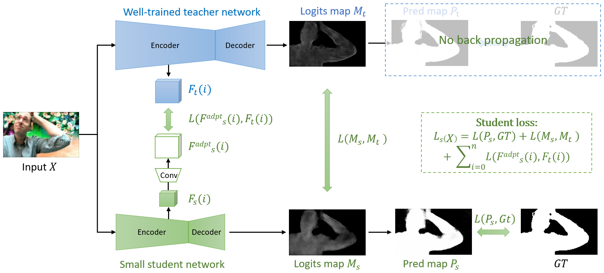
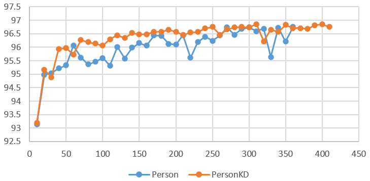
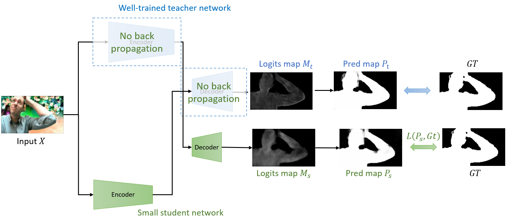
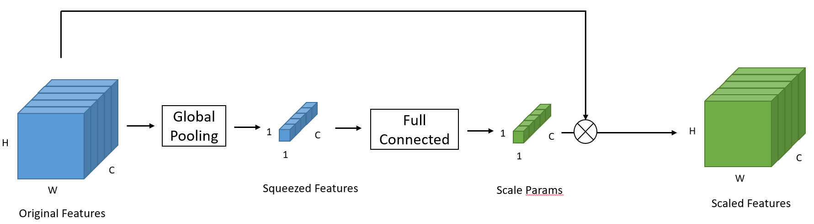
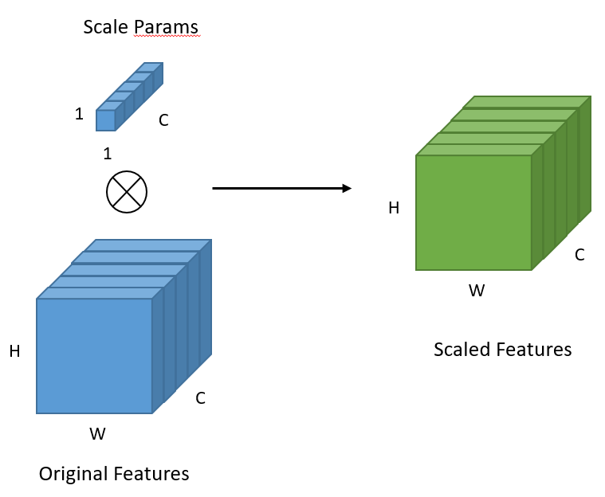
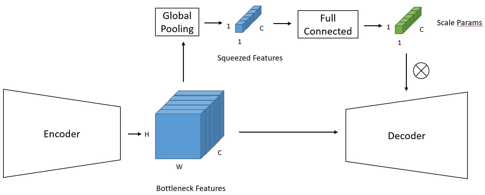
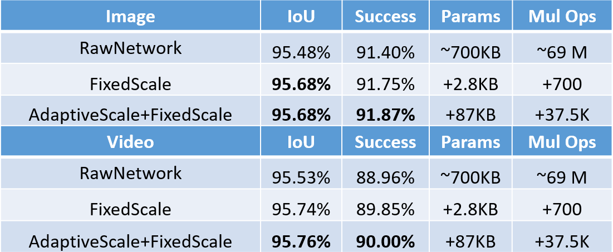
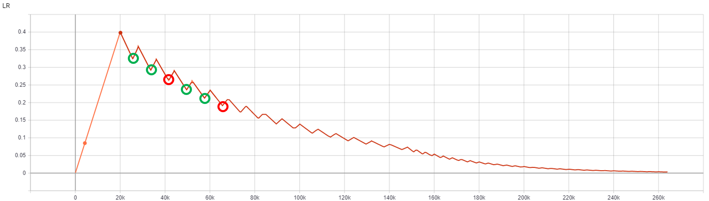
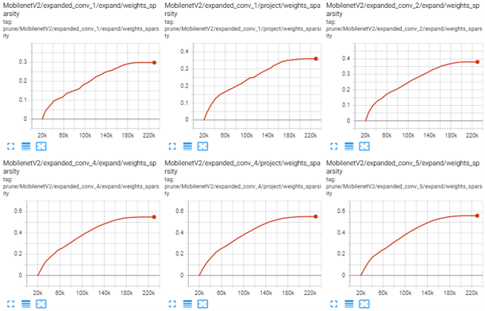

Demo on Teams
Target & Obstacle
Teams and Skype teams in Redmond have developed a neural network for semantic segmentation, which can segment a person out of the background in real time. This model is designed for running on personal computers and mobile phones. We need to improve the performance of this model.
1. Model size and running time are strictly restrained. We need to increase IoU under limited computational resources.
2. Original model is well-trained and finely modified. We do not have enough time and workforce to finetune a model. Consequently, our refinement method needs to be efficient enough to provide IoU improvement even without carefully selected parameters.
3. Original model is well-designed and highly compressed. We do not have much redundancy.
Knowledge Distillation
In Knowledge distillation (KD) (Hinton et al., NISP, 2014), the teacher is MobileNetV2 (Sandler et al., CVPR, 2018) with a width multiplier of 2.0, and the student is MobileNetV2 with a width multiplier of 0.5.
The results are displayed below. X-axis: iterations. Y-axis: IoU on the test set.
Cross Knowledge Distillation
We proposed cross-knowledge distillation (cross KD) inspired by KD. In cross KD, the student network is compelled to learn how to generate and decode the same feature extracted by the teacher network.
We found that cross KD can accelerate the speed of convergence significantly. However, the improvement of IoU is subtle under this scenario.
Adaptive Scale
Inspired by the squeeze and excitation network (Hu et al., CVPR, 2018), we proposed the adaptive scale.
- Squeeze & Excitation (Hu et al., CVPR, 2018)
Local Scale: extract global feature and multiply to itself.
- Fixed Scale
Scale parameters are fixed to reduce the computational cost.
- Global Adaptive Scale
To balance performance and cost, we apply the global adaptive scale on the decoder and the fixed scale on the encoder.
- Result
Our method outperformed the raw network with little cost and no fine-tuning.
Input image size: 90x160x3
(We used a new dataset here because more labeled data were available.)
Pruning
On the red circle, we will prune the elements in the weight matrix. No pruning will occur for the green circle, and the network can "recover" during training.
This training schema is in accord with the "Loss of Plasticity" theory proposed by Richard Sutton in a talk in 2022. However, we have applied it to practice in 2019.
This network was trained on 4 x Tesla P40 for 117 hours.
Weight sparsity: 0% -> ~40%
IoU on image: 95.48% -> 95.32%